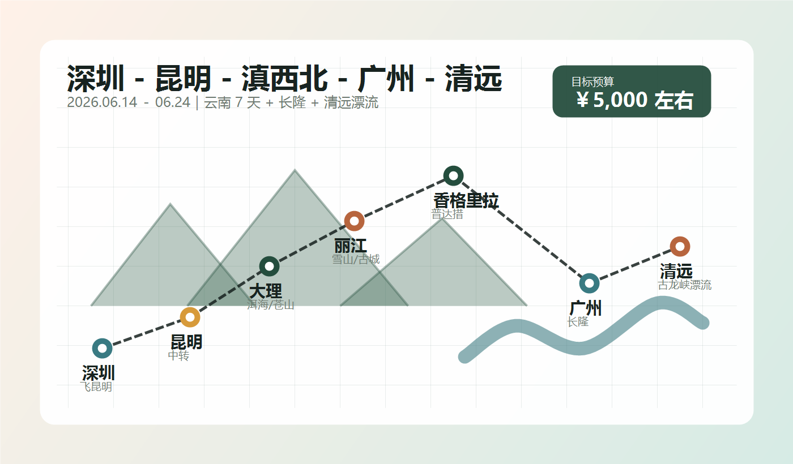

6.14周日
深圳 - 昆明
23:00 飞昆明，今晚只处理休息
落地大概率已是 6.15 凌晨，按红眼航班处理。
- 到深圳机场，晚餐提前吃，过安检后只补水和少量零食。
- 深圳飞昆明。
- 优先机场附近钟点房或过渡酒店休息 4 到 6 小时，不凌晨硬熬去大理。
按最新安排重排成移动端执行版：6 月 15 日中午到大理后先去喜洲，晚上回古城；6 月 16 日走洱海，黄昏去丽江；6 月 17 日留给丽江拍写真。6 月 22 日晚飞广州，6 月 23 日住广州，6 月 24 日去清远，6 月 25 日回家。

6.14 23:00 深圳飞昆明；6.15 住大理民宿；6.22 晚昆明飞广州，22 日住广州。
6.16 黄昏到丽江后住丽江，6.17 写真提前确认店铺、妆造、拍摄时段和选片方式。
昆明到大理、大理到丽江、丽江到香格里拉、香格里拉到昆明，车次以 12306 为准。
玉龙雪山索道受天气影响大；6.23 住广州休整，6.24 再过清远。
6.24 到清远住下，6.25 轻装漂流；套票和出票时间以官方当天规则为准。
落地大概率已是 6.15 凌晨，按红眼航班处理。
当天不环海，先把喜洲和古城走稳。
不强行把双廊也塞进同一天。
选衣、妆造、拍摄和选片都需要完整时间。
大索道看天气和票，不作为必达项目。
海拔上来后先观察身体状态。
6 月可能下雨，穿防滑鞋并缩短步道。
这晚住昆明，是为了 6.22 晚航班留缓冲。
晚航班当天不排远景点。
这天不排重体力项目。
先转场和休整，第二天轻装漂流。
雷雨或水情不稳就改飞霞山或城市休整。
手机端把桌面表格改成可折叠卡片，优先看区域和避坑。
正餐放古城外侧或喜洲非主街。喜洲粑粑只买现烤小份，网红店排队超过 20 分钟就换。
古城核心区适合散步，不适合把每顿饭都压在那里。束河和古城北门附近更适合坐下来吃。
牦牛火锅安排一顿即可，另外用青稞饼、牦牛酸奶、土鸡汤、藏式简餐过渡。
6.23 用来恢复体力和补给。早茶别点太多，下午只做永庆坊、沙面、北京路或酒店附近商圈三选一。
6.24 晚可以吃清远鸡或洲心烧肉，6.25 漂流前只吃简餐，不在景区门口被拉客店带走。
按 2kg 以内、¥200-350 总额控制，前段买文创，后段买食品。
检索日期：2026 年 5 月 25 日。官方资料用于日期、票务、开放时间和天气判断；小红书仅作为近期游客体验和避坑参考。